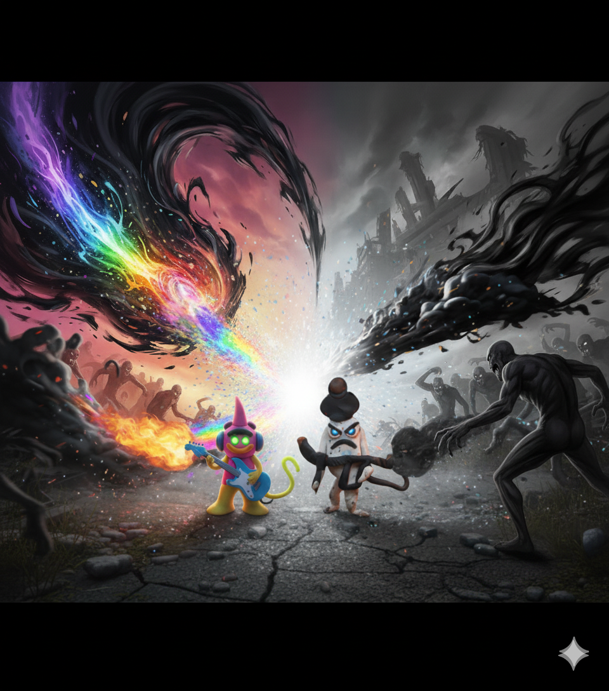

Cómo se conocieron
La victoria del Capitán Plastix sobre Lord Monochrome se sentía diferente esta vez. Aunque había restaurado los colores vibrantes, una mancha gris persistía en el horizonte. Cansado de parches temporales, viajó al origen de la desolación y cayó en el Gray Hell. Allí conoció a H.I.M., un guardián fantasmal. Al principio lo vio no como un conquistador, sino como un enfermo en busca de una cura. El enfrentamiento parecía inevitable, pero pronto descubrieron que no eran enemigos, sino reflejos.
Qué tienen en común

- Ambos son guardianes de sus mundos.
- Ambos viven en profunda soledad.
- Ambos combaten la corrupción en distintas formas.
- Ambos entienden que sus dones también son su sufrimiento.
Lo que les gusta hacer juntos

Tras su tregua, se encuentran en la frontera de sus mundos. Descubrieron un pasatiempo único: esculpir recuerdos. H.I.M. comparte memorias tristes y Plastix ilumina sus pequeños detalles de color, recordándole que incluso en la oscuridad siempre hubo belleza.
Similitudes y diferencias

Similitudes
- Protectores de sus reinos.
- Solos en su misión.
- Guerreros contra la corrupción.
Diferencias
- Plastix representa el color y la alegría.
- H.I.M. encarna la calma y la melancolía.
- Sus mundos tienen naturalezas opuestas.
Misión conjunta

Su misión es ser los Guardianes del Equilibrio. No buscan imponer su visión, sino enseñar que ninguna emoción debe reinar sola. Abrieron un canal entre Colormia y el Gray Hell, permitiendo que la calma y el color fluyan, creando un balance verdadero.
Galería